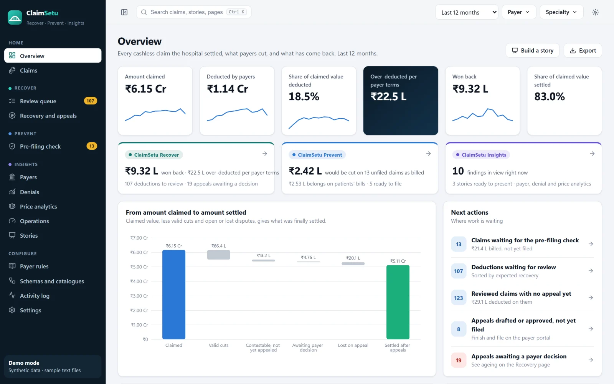
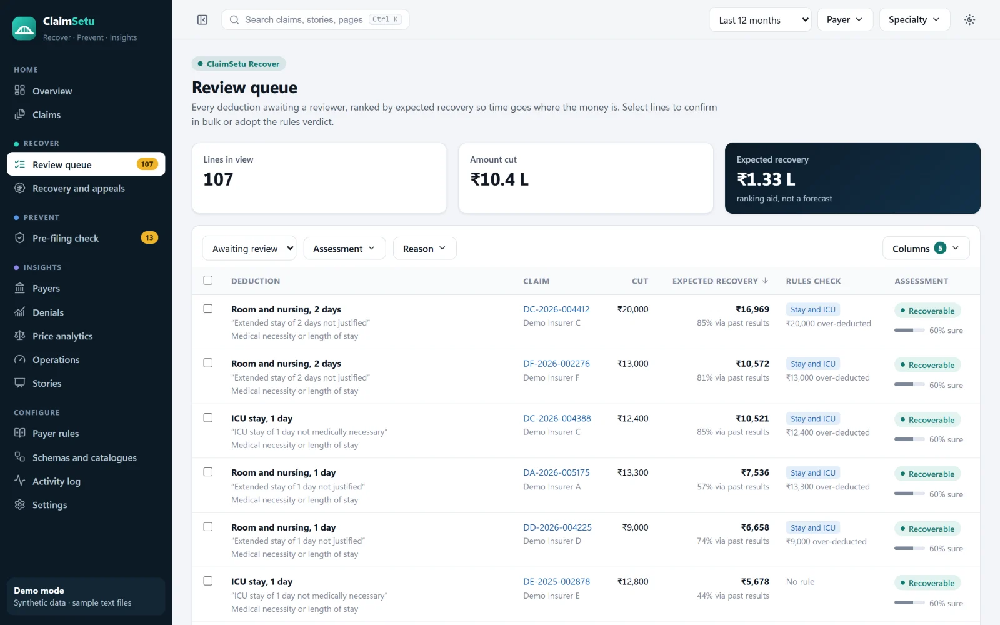

ClaimSetu
For hospital finance teams who lose money to insurer deductions.
- Reads
- Settlement letter, bill, discharge summary
- Checks
- The payer's terms and agreed rates
- Finds
- What was cut without a basis
- Produces
- An appeal with its evidence
We read the paperwork, test it against the rules, and show you the money that went missing.
Prototype, looking for first pilot partners
92,000 billed − 75,000 agreed = 17,000 allowed
32,000 cut − 17,000 = 15,000 over-deductedEvidence: discharge summary, "needing insulin adjustment"310,000 claimed × 10% = 31,000No matching rule foundSynthetic claim, the same one checked above.
Read
The settlement letter says what was cut. The bill says what was charged. The discharge summary says what happened.
Check
One rule file per payer holds the policy terms and the rates it agreed with the hospital. The engine works out the most the payer could cut.
Review
Findings with a clear rule go to quick confirmation. Anything without a rule waits for a reviewer. Nothing unclear is appealed automatically.
Recover
The draft names the term, shows the arithmetic and lists the documents. The hospital edits it, approves it and files it.
Move the amounts. A simple version of ClaimSetu's agreed-rate check.




Both compare documents with the rulebook that governs them, and show a person where the two disagree.
For hospital finance teams who lose money to insurer deductions.
For exporters whose refunds and incentives stall on mismatched filings.
In FY24 Indian health insurers disallowed ₹15,100 crore and repudiated ₹10,937 crore, of about ₹1.17 lakh crore claimed.
Exclusions, co-payments and non-payable items are real. We say so, claim by claim.
No public source says how much a hospital could win back. Measuring that is what our first pilots are for.
It takes the letter, the bill, the notes and the payer's terms, side by side, for every cut.
Figures: Outlook Business, reporting IRDAI data. They include claims paid back to policyholders as well as hospitals.
We are setting up a company address. Until then, please try the demo and read how it works.